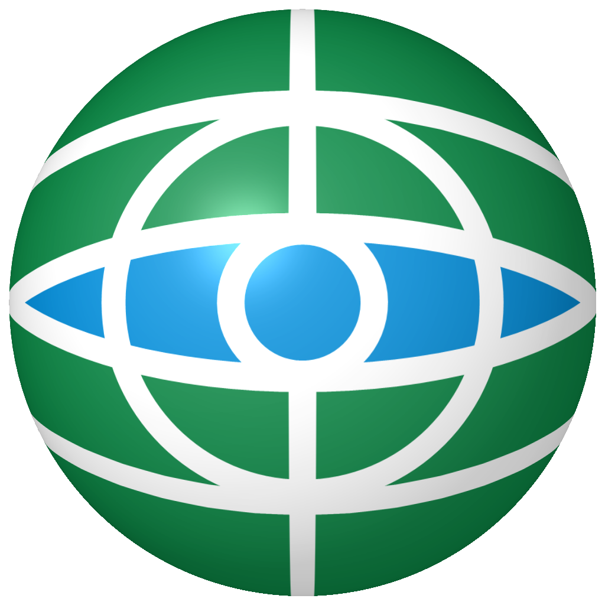
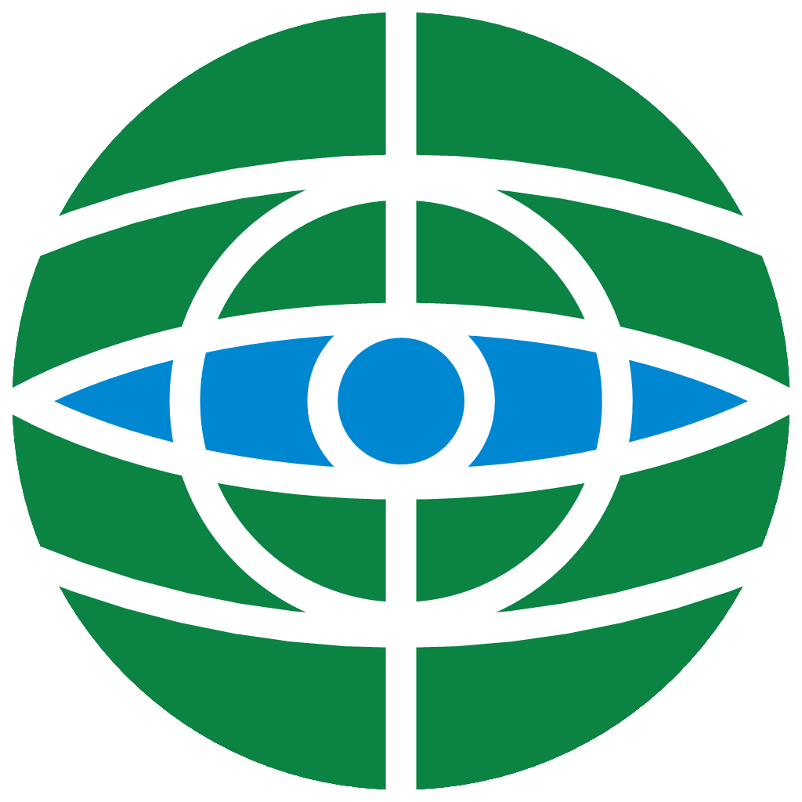

1. Globo Minimalista com Cores Originais em Alta Resolução
A imagem de baixa resolução (151×150 px) foi recriada matematicamente em Ultra HD com curvas vetoriais puras, preservando rigorosamente as cores solicitadas (Verde Globo #0B8343 e Azul Tech #0087D1).

Globo Minimalista 3D com Abaulamento Frontal
Efeito leve em 3D com curvatura esférica convexa para a frente, iluminação difusa direcional, profundidade periférica e reflexo especular radial.

Globo Minimalista 2D Oficial (Alta Resolução)
Vetorização precisa da imagem original. Linhas brancas puras, curvas de meridiano e latitude com anti-aliasing perfeito e transparência.
Avaliação Técnica de Resolução & Qualidade Visual Recriação Concluída
A imagem enviada (minimalista.png) possuía apenas 151×150 pixels. A recriação em 1024×1024 px e formato vetorial SVG era indispensável para garantir apresentação profissional e acabamento impecável no WebGIS e relatórios executivos.
2. Outras Variações de Cor & Efeitos (Estudos Adicionais)
Clique em qualquer outra opção abaixo para alternar as simulações em tempo real.
Ciano Elétrico (Tech Cyan)
Azul Elétrico Neon (#38BDF8) com pupila luminosa.
Resgata a paleta azulada da logo de teste original com alto contraste tecnológico sobre fundos escuros corporativos.
Bicolor Oficial (Roxo & Verde)
Pálpebras em Roxo / Íris em Verde Esmeralda.
Une as cores institucionais ativas do PANORAMA GIS: a nobreza do roxo nos arcos e a inteligência bio-geoespacial verde no núcleo.
Bicolor Tech (Safira & Ciano)
Arco Azul Safira / Rede Neural Ciano.
Sensação de profundidade tridimensional com contorno suave de pálpebra e núcleo neural em alta luminosidade.
Verde Esmeralda Institucional
O tom esmeralda do PANORAMA GIS.
Equilíbrio orgânico-tecnológico perfeitamente alinhado com a paleta do software socioambiental e botões do sistema.
Gemini Original (Verde Menta)
A cor nativa gerada pelo Gemini (#55FFB0).
Luminosidade verde-menta fluorescente pura, com o recorte transparente limpo e preservação total da aura cibernética.
Roxo / Violeta (GISCARTA)
Violeta nobre com alta saturação óptica.
Identidade moderna de IA e inovação analítica, gerando excelente sinergia com os dados GIS e painéis escuros.
Ouro Âmbar Executivo
Dourado tecnológico caloroso e nobre.
Traz distinção executiva e sofisticação imediata, lembrando instrumentos cartográficos e sensores termais de precisão.
Branco Titânio com Aura Ciano
Linhas brancas de altíssima nitidez + glow.
Máximo contraste absoluto em fundos escuros, preservando os contornos claros e iluminando o entorno com ciano.
Formato de Exibição:
Efeito de Destaque Visual sobre a Logo Selecionada:
3. Simulação nos Ambientes Oficiais do PANORAMA GIS
Veja o comportamento visual exato nos 3 ambientes principais da aplicação.
Visualização em fundo 100% escuro sem iluminação externa
4. Histórico de Versões Vetoriais Anteriores
Estudos de traço simplificado criados anteriormente para referência comparativa.